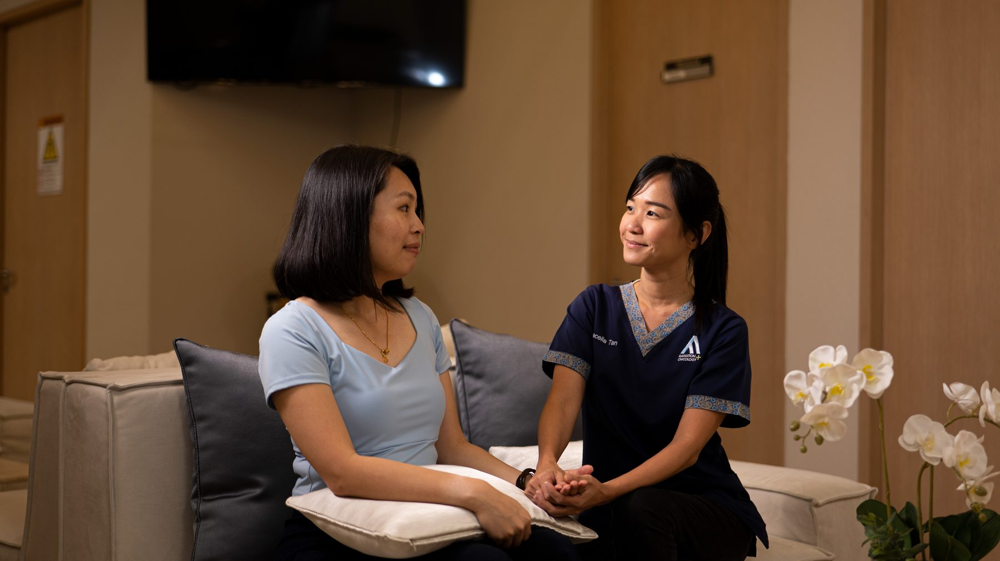
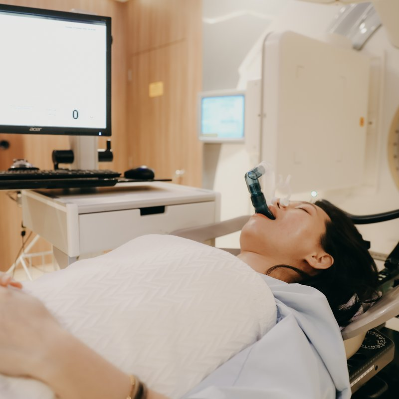

Breast
Hypofractionated regimens, partial breast irradiation, and survivorship pathways.
Read approach →
AARO is Singapore's pioneering specialist radiation oncology practice. For over a decade, our team — founded by oncologists from the National Cancer Centre Singapore — has treated complex cancers with technology and judgement that justifies the journey.
Founded in 2015 by oncologists from the National Cancer Centre Singapore, AARO brought the academic-centre model — one specialist per cancer type — into private practice for the first time in Singapore. Until then, private radiation oncology was led by generalist medical oncologists. We changed that.
Our founding team had spent the previous decade pioneering Southeast Asia's first SBRT and SRS programmes at NCCS — treatments now adopted across the region. Today, we operate from the Centre for Stereotactic Radiosurgery on Adam Road, Singapore's first independent facility purpose-built for advanced radiation therapy.
We are not a chain. We are not part of a hospital group. We are a four-specialist practice, each with their own sub-specialty focus, who chose to build something better.

Twelve cancer types, one consistent standard. Each cancer area is led by a named specialist who has treated it for years.
Hypofractionated regimens, partial breast irradiation, and survivorship pathways.
Read approach →SBRT-delivered prostate radiotherapy in five sessions, brachytherapy where indicated.
In developmentSBRT for early-stage NSCLC, stereotactic radiosurgery for oligometastatic disease.
In developmentSRS and SBRT for primary brain tumours, brain metastases, and skull-base lesions.
In developmentSBRT for unresectable HCC and oligometastatic liver disease, in MDT settings.
In developmentSingle-fraction SBRT for spinal metastases, with cord-sparing planning.
In developmentNeoadjuvant short-course or long-course CRT, organ-preservation pathways.
In developmentIMRT and VMAT planning that protects swallow function and salivary glands.
In developmentEsophageal, gastric, pancreatic, biliary — combined-modality where indicated.
In developmentBladder, kidney and testicular tumours — multidisciplinary planning.
In developmentExternal-beam plus brachytherapy boost for cervical and endometrial cancers.
In developmentInvolved-site radiation therapy for nodal lymphomas, ISRT planning.
In development
Hands-on guidance from your radiation therapist before every session.

Each plan built from your imaging, reviewed by the consultant team.

Sub-millimetre precision with breath-hold protocols where it matters.
One named coordinator stays with you from first call to follow-up.

Each AARO specialist trained at the National Cancer Centre Singapore — the institution that built Singapore's modern radiation oncology programme. You'll meet the named consultant who will lead your care, the same person every visit.
No anonymous testimonials. Every story is told by the patient who lived it.
Oscar Lim, 21 — Stage 4 sarcoma with lung metastases, treated by Dr Daniel Tan
Full story pagePak Tjugito Naslim — Stage 2 prostate cancer, treated by Dr David Tan
Full story pageHelen Yow — Papillary squamous cell carcinoma, treated by Dr Daniel Tan
Full story pageTreatment delivery happens at our flagship Centre for Stereotactic Radiosurgery on Adam Road. Consultations are also available at five partner hospitals across Singapore.

If your question isn't here, just ask — WhatsApp us or use the form below. Same-working-day reply.
No. You can contact us directly — by WhatsApp, phone, or the form below. We see patients who come on their own initiative as well as those referred by GPs or other specialists.
For urgent cases we typically offer appointments within 2–3 business days. Standard consultations are usually available within a week. Contact us and we'll advise based on your situation.
All existing medical reports, imaging (CD or digital link if available), pathology results, and your current medication list. If you have a prior treatment summary from another doctor, bring that too. You cannot bring too much — we will review everything.
SBRT and many of AARO's treatments are listed under the Ministry of Health's approved procedures and can be claimed under MediShield Life and Medisave, subject to your plan limits. We accept most Integrated Shield Plans with cashless billing. Our care coordinator will verify coverage before treatment begins.
Side effects depend on the treatment type and cancer location. SBRT and SRS are generally very well tolerated — many patients continue working throughout. Hair loss only occurs if the treatment area includes the scalp. Most short-term effects (mild fatigue, localised skin changes) resolve within weeks. Your specialist will explain what to expect for your specific case.
Yes — second opinions are a significant part of what we do. Experienced oncologists regularly encourage their patients to seek specialist input. We will give you our honest assessment, explain it in plain language, and encourage a conversation between your teams. Many patients consult AARO alongside their existing oncologist; others transition their radiation treatment to us.
Yes. AARO treats patients from Malaysia, Indonesia, the Philippines, and across the region. We can conduct an initial consultation by video call to assess whether your case is appropriate before you travel — and provide a preliminary assessment within 3–5 business days when you send us your imaging and reports in advance.
The fastest way to reach us is WhatsApp — most patients hear back within the same working day, often within the hour.
WhatsApp, call, or fill in the form. Tell us briefly: your name, your situation, your preferred clinic.
A care coordinator replies within the same working day, confirms the right specialist and slot.
Bring your existing reports, imaging and medications. Your consultation runs 45–60 minutes.